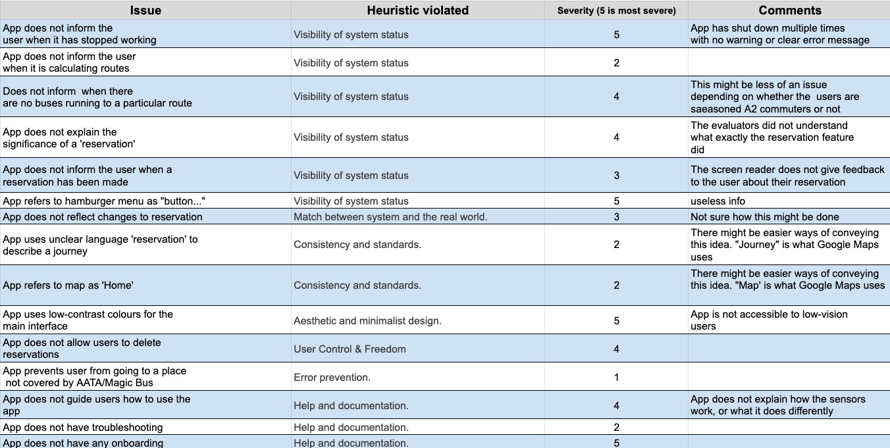

LookingBus App Evaluation & Redesign
January, 2018 - May, 2018
CURRENTLY UPDATING - April, 2019
For my capstone UX project, my team and I worked with LookingBus to redesign the UX of their Android app, with Blind and Visually-Impaired (BVI) users in mind. LookingBus is an Ann Arbor start-up that uses their own IOT technology and mobile app to uplift BVI users through easier, more useful access to technology and transportation.
Our work won a few design awards from the University of Michigan: the Diversity, Equity, and Inclusion Award, and the Univeristy of Michigan School of Information – Best UX Capstone Project Award 2018. The project was complex and challenging, but to work on something that makes such a difference felt meaningful and satisfying.
To meaningfully understand this complex and nuanced interaction design project, we conducted Usability Testing, Heuristic Evaluations, User and Market Research, Wireframing, and Digital Prototyping. Our end product was a beautifully- and creatively-designed, screen reader friendly, hi-fi digital prototype with a set of thoroughly-considered visual and interaction design systems.
The Design Problem
Most apps aren't designed for Blind and Visually-Impaired Users. They do not account for the unique set of a BVI user's visual limitations, behavior patterns, physical tendencies, mental models, information hierarchies, and screen reader usage. Thus, we strongly considered the BVI experience and perspective in designing the LookingBus User Experience. Every single element — from app navigation to route search, from ride booking and in-route information — was highly optimized for screen readers and the BVI User.
UX Research
Our research included user interviews, literature review, heurestic evaluations, and competitive analysis.
Heuristic Evaluations
For our heuristic evaluation, we had multiple sessions using screen readers with Android, the then-version of the LookingBus app, and various other mobile apps. We also adapted certain Nielsen-Norman metrics for the context of the screen readers and the BVI user. To see the full Heuristic Evaluation matrix, the image below can be expanded on tap or click.
Competitive Analysis
For our competitive analysis, we looked at a variety of digital products, each with their own interesting design approach with regards to either transportation or BVI users. Some mobile apps that we considered included Google Maps, Uber, SeeingAI, BlindSquare, et cetera. To see the full competitive matrix, the image below can be expanded on tap or click.
Literature Review
The citations for the literature we read and analyzed for our background research:
- Sierra, Javier Sánchez, and Joaquín Selva Roca De Togores. “Designing Mobile Apps for Visually Impaired and Blind Users.” ACHI 2012 : The Fifth International Conference on Advances in Computer-Human Interactions, 2012.
- Inc., Apple. “IOS Accessibility - WWDC 2015 - Videos.” Apple Developer, 2015, developer.apple.com/videos/play/wwdc2015/201/.
- Alphabet. “Accessibility - Usability.” Material Design — Accessibility, material.io/guidelines/usability/accessibility.html#.
- Alphabet. “Making Apps More Accessible.” Android Developers, 16 Oct. 2017, developer.android.com/guide/topics/ui/accessibility/apps.html
- Alphabet. “Accessibility.” Google Drive Help, Google, support.google.com/drive/topic/2650510?hl=en&ref_topic=14940.
- Uber. “Uber Help — Accessibility.” Uber Help, help.uber.com/h/fab02244-735f-4a03-9781-201644262564.
Personas and User Journeys
Based on our interviews and research, we had three prime personas, each with a discrete and particular level of vision: fully blind, mostly blind, and partially blind. Each personas had their own different levels of vision and, thus, their own unique considerations. Below is the example of Joan, our persona of a partially-blind woman. The documents below expand on tap or click.
Below is a video of our prototype working with a native iPhone screen reader:
You can view and interact with our final mobile prototype here (see note below): LookingBus HTML Prototype.
NOTE: The prototype is meant to be viewed in a mobile browser with the mobile device's screenreader turned on.
On iPhone, you can turn your screenreader on by going to Settings > General > Accessability > VoiceOver (ON). You can view the prototype without the screenreader, although you'll lack the full experience!